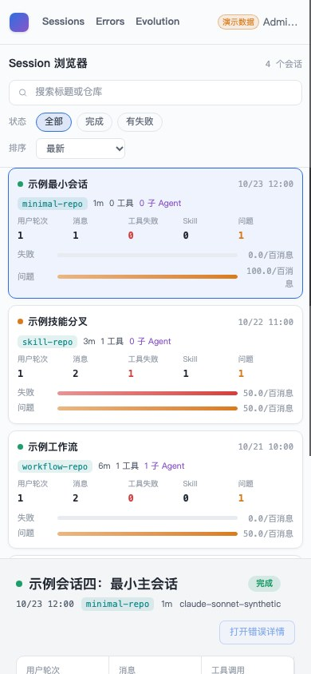

- Issue
- #47 · M4 problem API
- PR
- #114
- Head
- 2ab7b20
- Runtime
- FastAPI + SQLite + Vite + Chrome
- Source
- Synthetic external fixture
Harness Evolution · PR #114
M4-02 问题、归因与 Probe API 集成冒烟
在真实 FastAPI、SQLite 外部三表、Vite 与 Chrome 上验证五类只读 API、单快照、404/409、五态、外部漂移降级和亮色原型壳。
9冒烟场景
2失败回归修复
0失败读取 500
0外部写 SQL
Environment and Artifact
2026-10-26 · macOS · Chrome headless · 127.0.0.1Scenario Matrix
7 pass · 2 fixed| # | 场景 | 结果 | 观测 | 证据 |
|---|---|---|---|---|
| 01 | 五端点鉴权 | PASS | 五类未认证请求均返回 401。 | 401 × 5 |
| 02 | Session 问题与 Probe 列表 | PASS | 列表带 sessionTitle、anchor、badCaseAgent 和五态归因；Probe 反向来源正确。 | items=2 probes=2 |
| 03 | 404 与 409 | PASS | 同会话详情 200；跨会话 409；缺失 case/probe 返回各自稳定 404。 | 409 404 404 |
| 04 | analysis 形状漂移 | FAIL → FIXED | 非法 issue result 在列表、详情和分析端点统一降级为 unanalyzed/null，无 500。 | before-after.json before 500 → after 200 × 3 result=null |
| 05 | presentation 枚举漂移 | FAIL → FIXED | 非法 case/object 类型返回可见 degraded 卡，diagnosticCode 稳定，列表与详情一致，锚点 main/-1。 | degraded=true before-after.json before detail 500 → after 200 main/-1 |
| 06 | 只读侧效应 | PASS | 外部三表在读取前后行数与内容指纹完全一致。 | fingerprints unchanged 3 tables |
| 07 | 亮色原型壳 | PASS | 4 张 Session 卡；页面、顶栏、卡片为原型亮色令牌，顶栏 56px。 | body rgb(244,245,247) topbar 56px |
| 08 | 390px 响应式 | PASS | 4 张 Session 卡保留，页面无横向溢出。 | scrollWidth<=clientWidth |
| 09 | 控制台与隐私 | PASS | 正常路径无控制台 warning/error；报告不含 token、密码或轨迹正文。 | consoleViolations=0 |
Issues and Observations
P1 AI 分析结果形状漂移导致问题 API 500P2 非法展示枚举使问题卡消失且详情报 500
AI 分析结果形状漂移导致问题 API 500
- 实际
- 列表、详情和分析端点均抛 Pydantic ValidationError。
- 修复
- 公共出口统一降级为 unanalyzed/null。
- 回归
- 真实 SQLite 漂移 fixture 与 HTTP 断言。
已修复 · 2ab7b20
非法展示枚举使问题卡消失且详情报 500
- 实际
- 列表静默少一条，详情取空数组触发 IndexError。
- 修复
- 返回 degraded 占位、稳定 diagnosticCode 和 main/-1 锚点。
- 回归
- 列表与详情同构断言。
已修复 · 2ab7b20
Evidence
2 screenshots

Automated Coverage Assessment
3 areas reviewed| 区域 | 覆盖 | 结论 | 建议 |
|---|---|---|---|
| 问题/Probe API | 真实 HTTP + SQLite fixture | 五端点、404/409、单快照和外部漂移均已验证。 | 保留 MySQL marked contract 于 CI。 |
| 错误详情 UI | 不适用 | 页面和问题卡属于 m4-04。 | m4-04 继续按原型进行视觉验收。 |
| 原生 Computer Use | 受限 | macOS 锁屏阻止桌面操作，未绕过。 | 本轮使用真实 headless Chrome/CDP 证据。 |
Conclusion
通过问题 API 在正常与外部漂移数据下均可安全渲染，未发现未解决产品缺陷。
- 两个问题列表/详情 500 缺陷已在现有修复提交中关闭。
- 外部读取保持只读，五态和错误契约一致。
- 亮色原型壳与 390px 布局无回归。
证据源：真实 FastAPI/SQLite/Vite/headless Chrome、HTTP 状态与脱敏聚合。